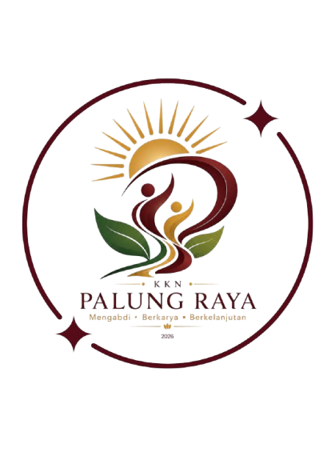

KKN Universitas Riau · Desa Palung Raya · 2026
Smart TOGA — Sistem Informasi Tanaman Obat Keluarga


Ada pertanyaan mengenai tanaman obat keluarga (TOGA), ingin memberikan saran, atau membutuhkan informasi lebih lanjut mengenai website Smart TOGA? Silakan hubungi Tim KKN Universitas Riau Desa Palung Raya melalui salah satu kontak berikut.